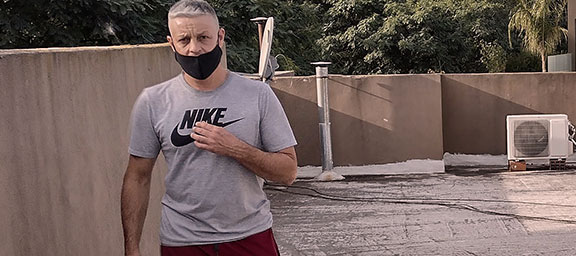

Hablemos!
Hermanos Roa
Somos techistas que trabajamos en el ruburo desde hace 25 años.
Nuestro fuerte son las contrucciones y reparaciones pero tambien hacemos trabajos de :
Especializacion en
- zingueria.
- pintura de techo.
- revestimiento de aleros.
- colocacion de chapas y estructuras metalicas.
- colocacion de claraboyas.
- pergolas.
- imperbealizacion de loza.
- colocaion de membranas.
- colocacion de vidrios fijos.
- colocacion de tinglados.
- colocacion de decks.
- arreglos de techos.
Participantes
Los que formamos parte de esta familia

Diego
25 años de experiencia en la construccion de techos
"Somos trabajadores especializados en trabajos de altura, con un interés específico en los proyectos profecionales con la mejor calidad. Nuestro trabajo refleja una apreciación de los patrones no intrincados, atención de la superficie, el material, el tiempo y la capacidad, inspirado en un entusiasmo por bocacion de esta materia. Actualmente buscandos un ambiente de trabajo inspirador que me permita desarrollar un buen trabajo, respetando nuestra libertad creativa como tambien nuestro conociemiento en esta bocacion“.
¿Por qué es un buen techista?
En principio porque trabajamos para que nos recomienden la base de ello es hacer bien las cosas, y en particular porque siempre nos debemos al acabado profecional.
Oscar
25 años de experiencia en la construccion de techos
"Cuando nos llaman buscan una solucion eso es lo importante saber responder sin tener en cuenta el nivel del inconveniente o de la situacion siempre gracias a la experiencia tenesmos soluciones, eso es lo que te permite y lo que te da realizar todo tipos de trabajos.“.
¿Cual seria su punto mas fuerte?
La expériencia, te podria decir un trabajo en especifico, pero la experiencia es clave porque es lo que te da el mejor resulta y tiempo para resolverlo, al haber hecho ese trabajo antes sabes de antemano que tenes que hacer y como hacerlo.